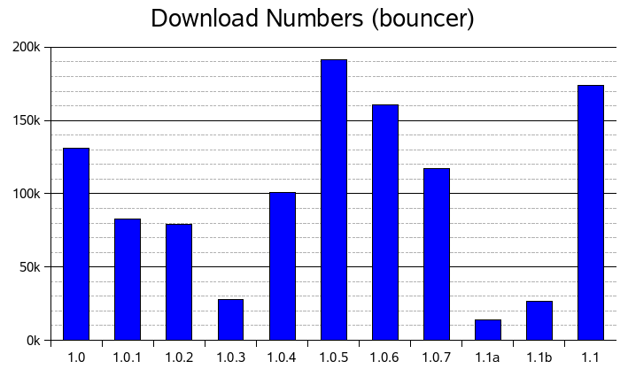

Download numbers

- Only official download of main builds counted
- English (US) Windows/Linux installers + Mac dmg;
through www.mozilla.org links
- Does not include other builds, platforms, languages
- Does not include direct FTP downloads, and other means of shipping
(Linux distributors, etc.)
next >